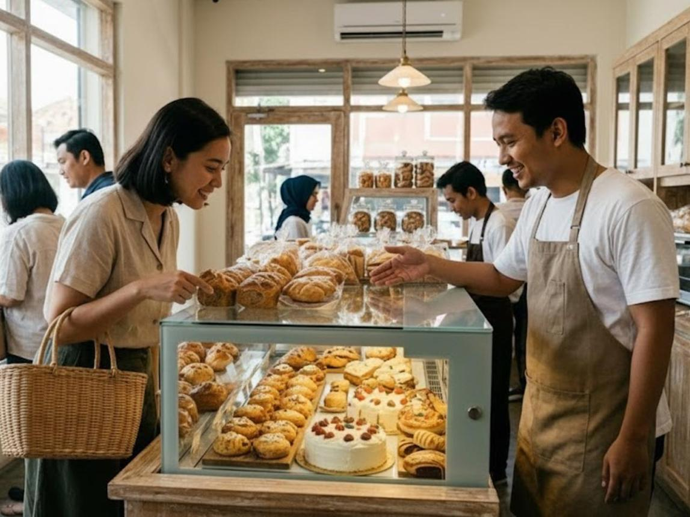
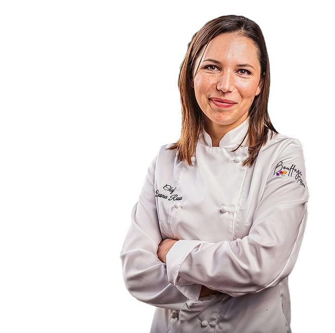
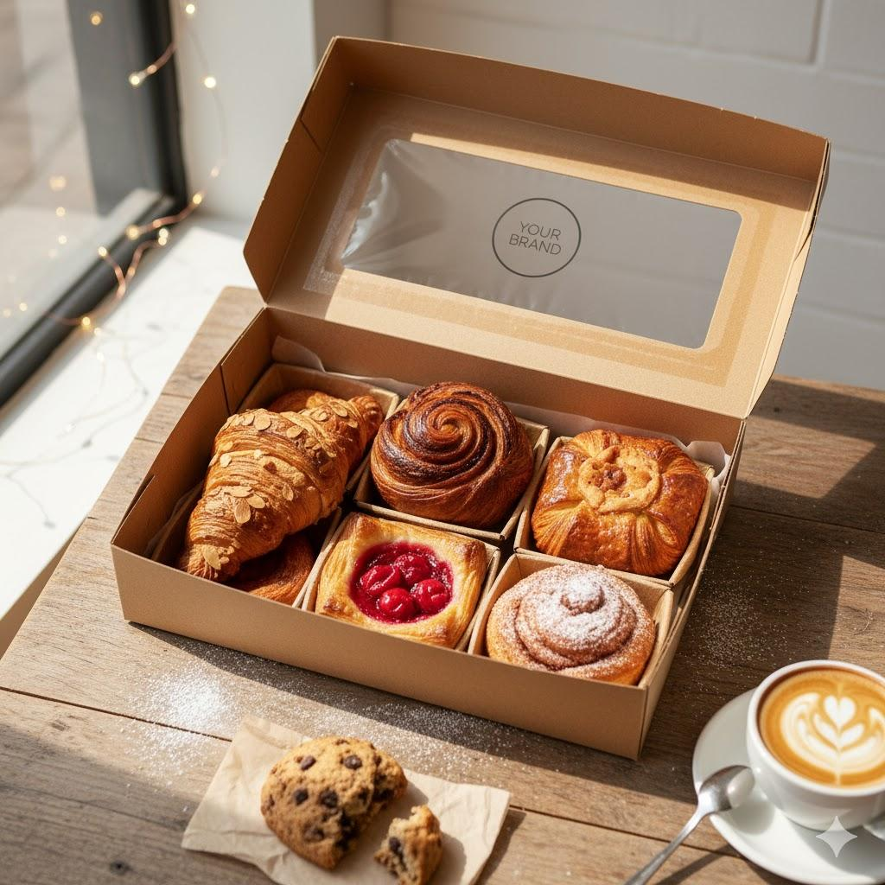
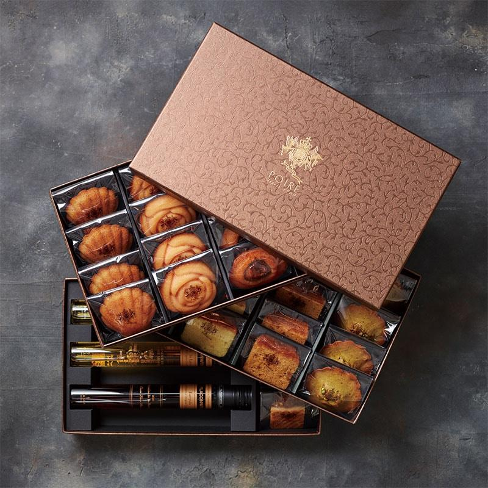
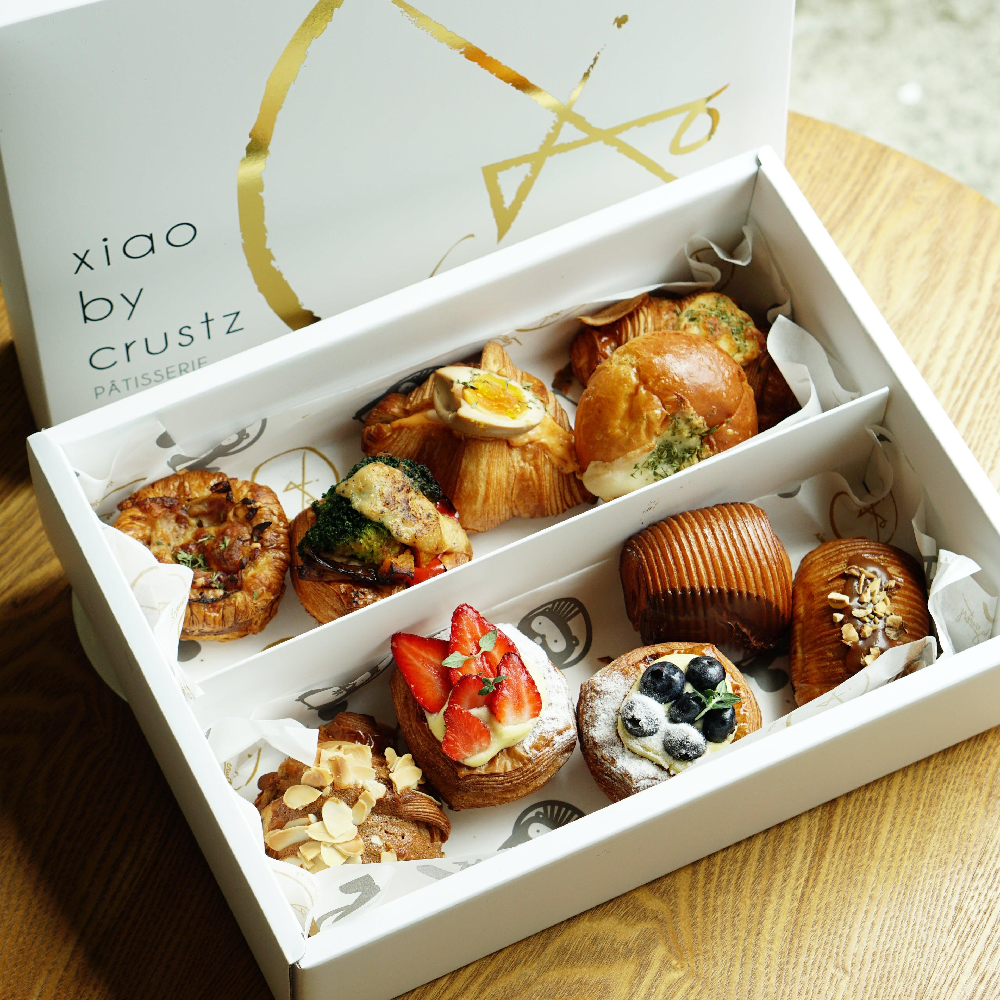

Gold Leaf Berry Entremet Tart
A showstopping French tart combining crisp almond sablé crust, Tahitian vanilla diplomat cream, glazed fresh berries, and 24-karat edible gold leaves.

Ingredients Checklist
Click items to check off ingredients as you prepare your station.
- 250g T55 French Wheat Flour
- 150g Unsalted Normandy Butter (cold, diced)
- 90g Icing Sugar (sifted)
- 30g Almond Flour
- 1 Organic Egg (room temperature)
- 500ml Whole Organic Milk
- 1 Tahitian Vanilla Pod (scraped)
- 100g Granulated Sugar
- 4 Egg Yolks
- 45g Cornstarch
- 150ml Heavy Cream 35% (whipped)
- 300g Fresh Raspberries, Blueberries & Strawberries
- 2 Sheets 24K Edible Gold Leaf
Step-by-Step Preparation Method
Prepare the Sablé Crust
In a mixer bowl fitted with a paddle attachment, combine flour, almond flour, sifted icing sugar, and cold diced butter. Mix on low speed until breadcrumb texture forms. Add egg and mix until dough comes together. Shape into a flat disc, wrap tightly in cling film, and chill for at least 2 hours.

Mix the Vanilla Diplomat Cream
Bring milk and scraped vanilla pod seeds to a simmer. In a separate bowl, whisk egg yolks, sugar, and cornstarch. Temper hot milk into yolks while whisking constantly. Return to saucepan and cook until thick pastry cream forms. Cool completely, then fold in softly whipped heavy cream.

Blind Bake the Tart Shell
Roll chilled dough to 3mm thickness and line a 22cm perforated tart ring. Dock the base with a fork and freeze for 20 minutes. Line with parchment paper and baking weights. Blind bake at 175°C (350°F) for 15 minutes, remove weights, and bake for an additional 10 minutes until deep golden brown.

Bake & Cool Completely
Brush shell with egg wash 2 minutes before finishing bake to seal pastry. Allow shell to cool completely on a wire rack before filling to ensure the crust remains crisp.

Assemble & Garnish with Gold Leaf
Pipe smooth diplomat cream into cooled tart shell. Carefully arrange washed and dried fresh berries in concentric circles. Lightly brush berries with neutral mirror glaze, and delicate gold leaf flakes using fine tweezers.
Chef's Studio Tips
- Temperature Control: Ensure butter remains cold during dough sablage to prevent gluten development and shrinking.
- Storage Note: Assembled tart is best served within 24 hours. Keep refrigerated at 4°C.
- Glaze Tip: Warm neutral glaze to 32°C before brushing onto fruit for optimal clarity and gloss.